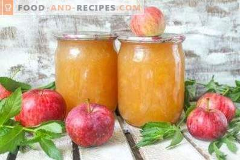

Abolu ievarijumu recepts
Klasisks ābolu ievārījums

| Sastāvdaļas |
| 3kg stingri rudens āboli |
| 1kg cukurs |
| 0.5l ūdens |
| 1gb citrons |
| 5gb krustnagliņas |
| 5gb krustnagliņas |
GATAVOŠANA
- Ābolus nomazgā, nomizo, izņem serdes. Sagriež plānās šķēlītēs.
- 3-4l katlā ieber cukuru, ielej ūdeni, pievieno krustnagliņas, mandeļu ekstraktu. Visu uzvāra līdz cukurs izkusis.
- Pievieno 1/2 sagriezto ābolu un vāra vidējā karstumā, līdz tie gandrīz pilnībā izšķīduši.
- Pieber otru pusi ābolu, vāra līdz mīksti. Pievieno viena citrona sulu, un turpina karsēt, kamēr ievārījums sabiezējis.
- Vārošu lej izmazgātās un sausās burkās, aizvāko un pakāpeniski atdzesē.
PIEZĪMES
Visus ievārījumus un konservējumus pakāpeniski atdzesēju zem segas vai guļammaisa. Šķidrākos apgāžu uz vāciņa, bet ābolu ievārījums, tikko ieliets burkā, sāk jau sabiezēt, tādēļ to atstāju ar vāciņu uz augšu.